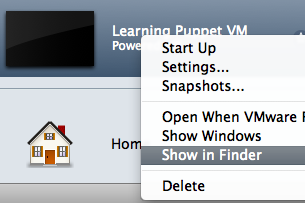
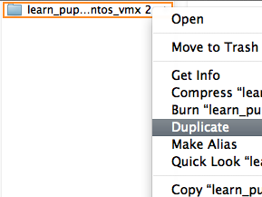
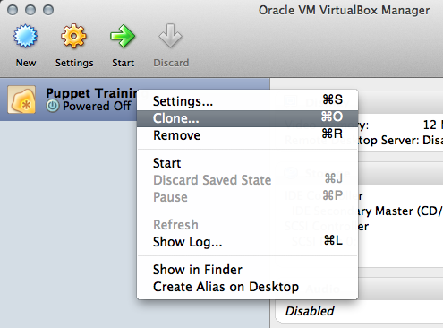
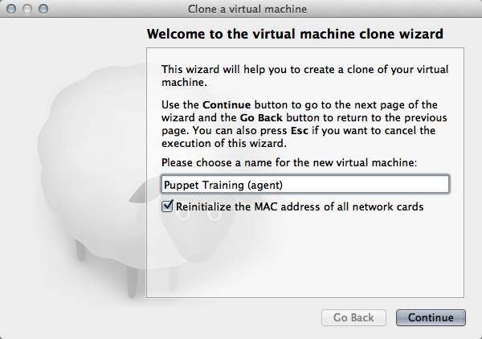
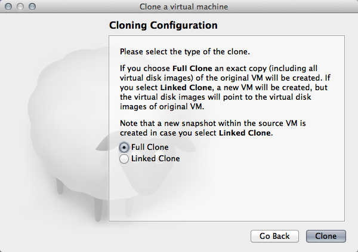

Learning Puppet — Preparing an Agent VM
We’re now moving into exercises that involve both a puppet master and one or more agent nodes, and to get the most out of this section, you’ll need to be running more than one node at a time. This interlude will help you get two nodes running and configured so that you’re ready for the next few chapters.
Step 0: Get the Latest VM
Things have changed quite a bit since we posted the first Learning Puppet VM, so to keep these instructions simple, everything below will assume you’re running a system with Puppet Enterprise 2.0 or later. You can check which version of PE you’re running like this:
[root@learn ~]# puppet --version
2.7.9 (Puppet Enterprise 2.0.1)
If you’re up to date, skip down to here. If you’re running an older version, do one of the following:
Download the Latest VM
The latest version of the Learning Puppet VM is right over here. As ever, it’s about 500 MB and free for everyone to download.
Before replacing your VM, make sure to save any manifests or modules from your previous copy. (After all, the whole point of Puppet is that you can use them to get right back to where you were.)
Or: Upgrade PE on Your Existing VM
If you can’t download a whole new VM right now, you can:
- Download the latest version of Puppet Enterprise. Choose the EL 5 for i386 installer, which is about 50 MB.
- Copy the installer tarball to your VM and follow the upgrade instructions in the PE 2 User’s Guide.
This is more advanced than just downloading the current VM, especially if you’re upgrading from PE 1.0 or 1.1, but we’ve tried to document the process clearly. Follow the instructions for upgrading a combined master/console server.
Step 1: Duplicate Your Existing VM
There are any number of ways you could make an agent VM for the next steps, but the fastest and easiest is to simply copy your existing VM and reconfigure it. (The reconfiguring could be difficult, but there’s a module for that.)
Below, we give instructions for copying the VM with VMware Fusion and with VirtualBox.
With VMware Fusion
(Note: although we don’t provide a full walkthrough for VMware Workstation, the process should be similar.)
-
If you still have the zipped VM archive you originally downloaded, you can extract it again for a fresh copy.
Otherwise, shut down the VM by running
shutdown -h nowwhile logged in as root. Once the system is stopped, locate the folder or bundle that contains the VMX file — you can right-click its entry in the Virtual Machine Library window and choose “Show in Finder” — and duplicate that entire directory. 
-
Your second copy of the files (whether from re-extracting or duplicating) contains a VMX file; drag it and drop it onto Fusion’s Virtual Machine Library window. (If this window isn’t displayed, the menu item to display it is in Fusion’s “Window” menu.) This will import the virtual machine without automatically starting it up, which will give you a chance to change its RAM. (If you accidentally start it anyway, you can always change the RAM later or leave it as is.)
-
Once Fusion has the VM, you can right-click its entry in the Library window and choose “Settings” to change the amount of memory it will consume. (Use the “Processors & RAM” section of the settings window.) Although the original (puppet master) VM will need at least 512 MB of RAM, you can safely dial the agent VM down to 256 MB.
You shouldn’t need to change the networking settings from the default mode (NAT); with VMware, this will allow your VMs to access the internet, each other, and your host system. If you need other nodes on the network to be able to contact your VMs, you can change the networking mode to Bridged.
-
When you start the VM for the first time, Fusion will ask whether you moved it or copied it. You should answer that you copied it.
With VirtualBox
-
If you still have the folder with the original OVF file, you can re-import it into VirtualBox for a new VM.
Otherwise, shut down the VM by running
shutdown -h nowwhile logged in as root. Once the system is stopped, right-click on the VM’s entry in the VirtualBox Manager window, and select Clone. You will be presented with a series of dialog boxes.
-
In the first one, choose a new name for the VM and make sure the “Reinitialize the MAC address of all network cards” box is checked.

-
In the second one, choose “Full Clone.”

-
-
Once VirtualBox has the new VM ready, change its network adapter to Bridged Adapter mode; otherwise, it will be unable to communicate with the puppet master. (You can also configure two network adapters instead of using bridged mode, but this is advanced and should not be done by most users.)
-
You can also click on the “System” settings to reduce the amount of memory the VM will consume. An agent node should only need 256 MB of RAM.
Step 2: Reconfigure the New Node With Puppet
Install this learningpuppet module on the agent VM, and apply the learningpuppet::makeagent class:
# wget http://docs.puppetlabs.com/learning/files/learningpuppet.tar.gz
# tar -xzf learningpuppet.tar.gz
# mv learningpuppet /etc/puppetlabs/puppet/modules/
# puppet apply -e "class {'learningpuppet::makeagent':}"
If you don’t give the class a newname attribute, it will default to agent1, which is probably what you want.
Step 3: Make Sure the VMs Can Communicate
For Puppet to work right, your two VMs must:
- Be able to reach each other by IP address
- Be able to reach the puppet master by name
- Have their firewalls turned off
- Have (reasonably) synchronized clocks
Ensure the VMs Can Reach Each Other by IP
With VMware Fusion
The VMs will be communicating via their eth0 IP addresses. Find these addresses by running facter ipaddress_eth0 on each system, then try to ping that IP from the other VM.
If the VMs can’t communicate, examine each VM’s settings and make sure:
- The networking mode is either NAT or Bridged.
- Both VMs have the same networking mode.
With VirtualBox
If both VMs have a single network adapter in Bridged Adapter mode (recommended), they will be communicating via their eth0 IP addresses. Find these addresses by running facter ipaddress_eth0 on each system, then try to ping that IP from the other VM.
If you have configured the VMs to have two network adapters, examine their settings — the VMs will be communicating via whichever adapter is set to Host Only Adapter mode. Run facter ipaddress_<ADAPTER> to find these IP addresses.
Ensure the VMs Can Reach the Master by Name
Make sure both VMs’ /etc/hosts files contain a line similar to the following:
172.16.158.151 learn.localdomain learn puppet.localdomain puppet # This host is required for Puppet's name resolution to work correctly.
The IP address should be the one you found for the puppet master in the previous step.
Once you’ve edited the files, test that both VMs can ping the master at both its full name and its aliases:
[root@agent1]# ping learn.localdomain
[root@agent1]# ping puppet
If this doesn’t work, make sure that the /etc/hosts files don’t have any conflicting lines — there should be only one line with those puppet master hostnames. If /etc/hosts looks good, you may also need to flush cached DNS information in each VM:
# nscd --invalidate=hosts
Ensure the Firewalls are Down
We shipped the VM with iptables turned off, but it’s worth checking to make sure it’s still down:
# service iptables status
Firewall is stopped.
(In a real environment, you’d add firewall rules for Puppet traffic instead of disabling the firewall.)
Ensure Both VMs Know the Time
Run date -u on both VMs, and compare the output. They should be within about a minute of each other.
Next
Your VMs are ready — now continue reading for a tour of the agent/master Puppet workflow.